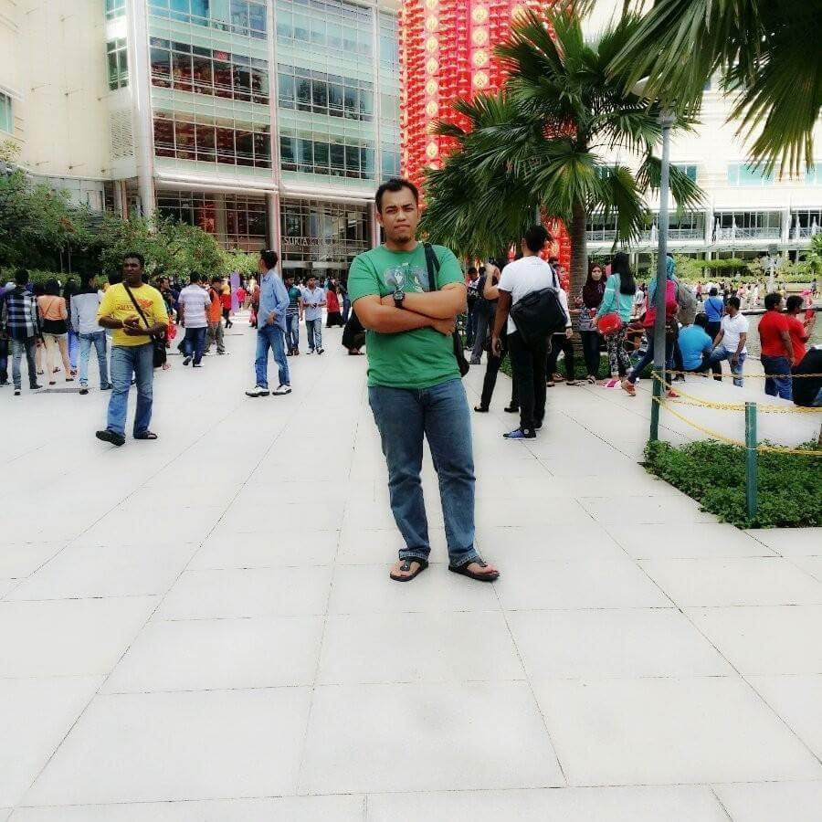
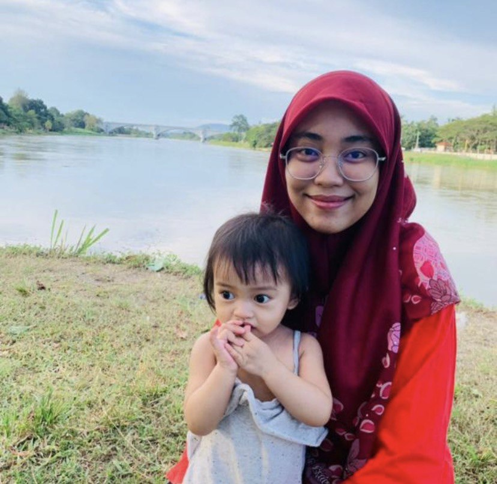
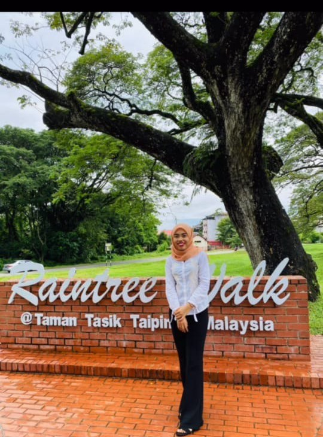
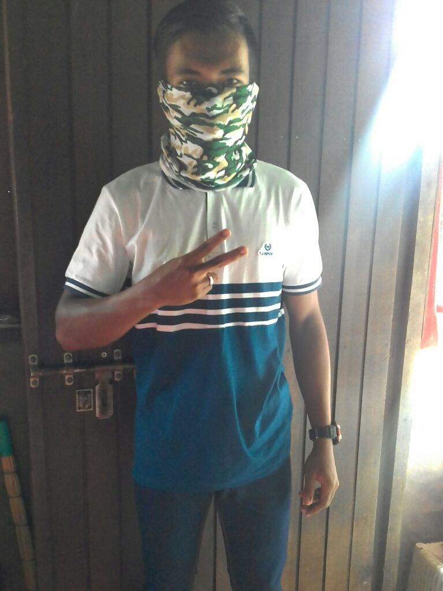
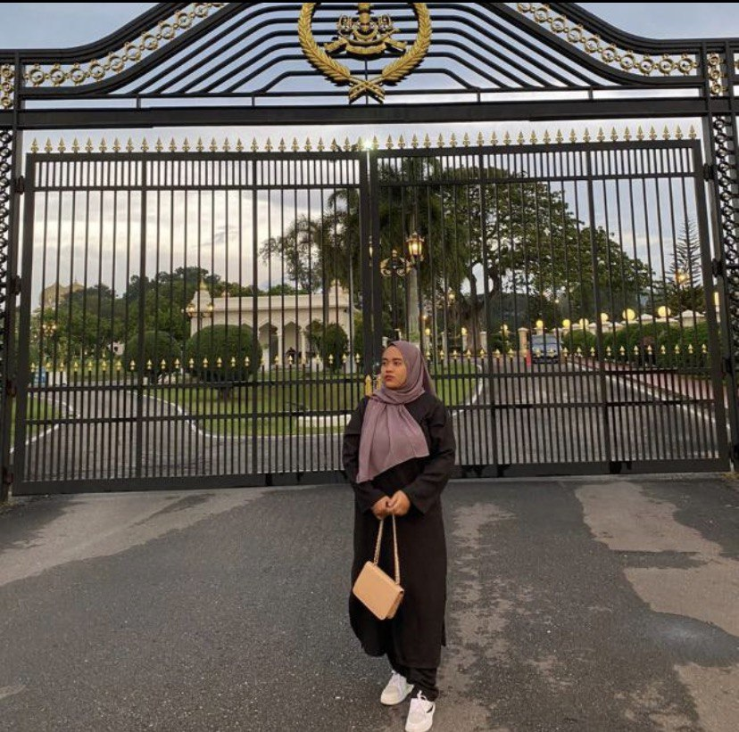
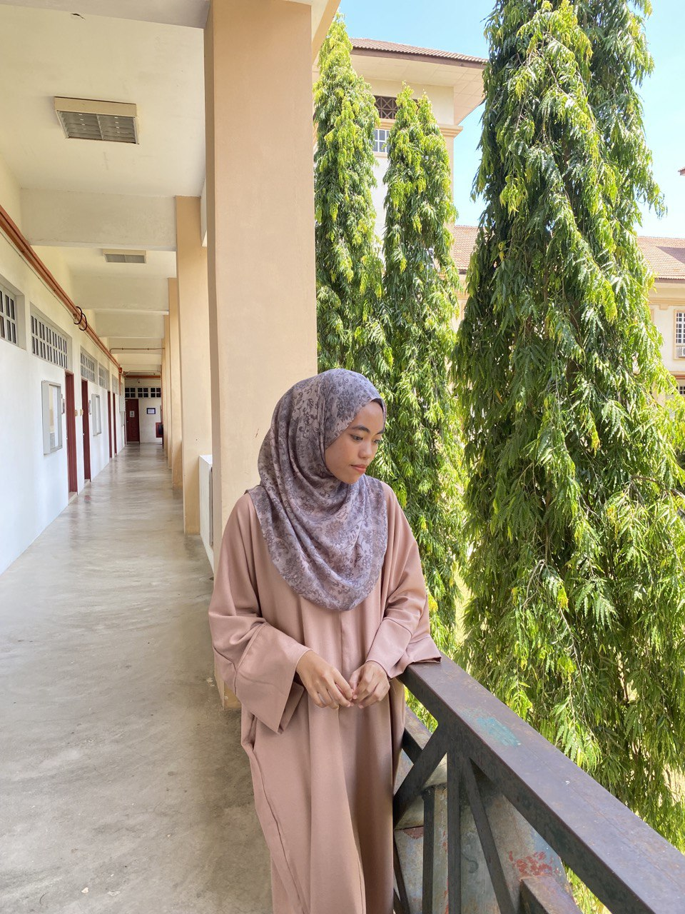

My father's name is Wan Hasan Basri Bin Wan Mohd Noh and he was born at Perak. He was born in 31 December 1961.
My father is a soldier's pension and now he is working as a volunteer. He is very hardworking towards his job.
Besides, he always did his best for his children. Eventhough he was very strict with us, but he is a caring person and never neglected his chilren
My father also can do works such as gardener because he loves to gather many plants.
My mother's name is Hasnah Binti Abdullah and was born at Hospital Kluang, Johor. She was born in 18 October 1962.
My mom is only a housewife. She is the best mother in the world. She always wanted to see her children to be successful in life.
She always give advise to me to study hard and get a Diploma on time. My mother is also a good cooker. No one can compete with her cooking.
That's one of the reason I love to eat all the time. My parent is a great parent. I am grateful to them and i love them so much.
MySiblings






My first brother's name was Muhd Najamudin. He is 39 years old. He is currently working as a lorry driver in Kelantan and live with his family. Second, Wan Halimatun is my oldest sister. She is a fierce sister among us.
But, she always treat our family everytime she got her own salary. She
have one daughter named Wafa who is 2 years old. Third, my sister, Wan Hazimah is a happy go lucky person. She always gives her best to fulfill my parents hope eventhough it was hard for her. She is a strong woman that i have seen so far. Next, is my brother,
Wan Hamdan is my fourth brother.
He is working as a guard security at the bank. He is a nice brother and protective to other siblings. After that, my fifth sister is Wan Hazirah. She is my closest sister that we
always share our daily lifes or back up each other when we are in sad or happy. And last, which is me the youngest, Wan Hamidah.